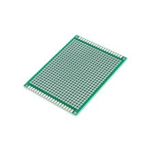

PCB Макетная плата для пайки двусторонняя 6x8см
Платы прототипированияЭто двусторонняя макетная плата для пайки размером 6×8 см, предназначенная для быстрого монтажа и отладки простых электронных схем. Обычно такие платы используют для прототипирования, когда нужно паять детали вручную без изготовления собственной печатной платы.
Плата имеет двустороннюю разводку и предназначена для монтажа выводных компонентов пайкой. Формат 60×80 мм удобен для небольших самодельных устройств, модулей и учебных проектов. Основа таких плат обычно выполняется из FR-4, то есть стеклотекстолита с медным покрытием с обеих сторон. Типичное применение — сборка тестовых схем, переход с макетной платы на постоянный монтаж и изготовление простых прототипов. Для таких изделий важны шаг отверстий, толщина платы и качество металлизации отверстий, но точные значения зависят от конкретного производителя.